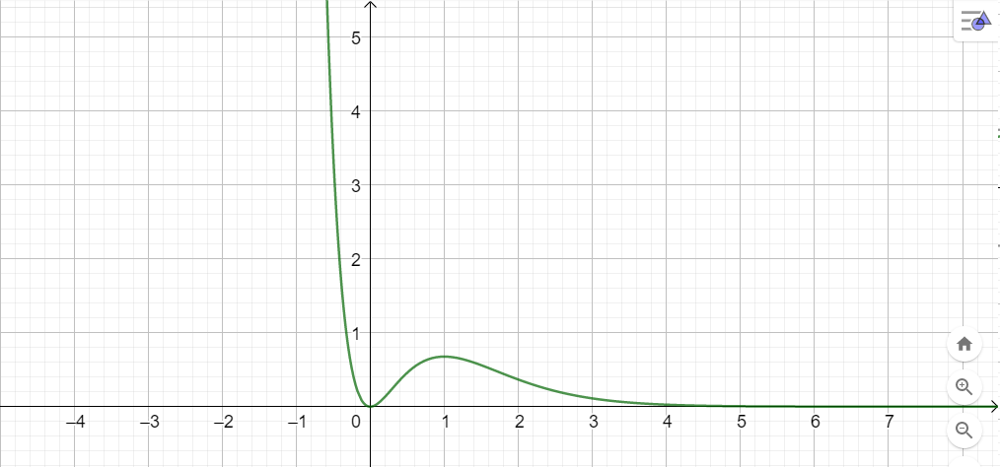

le dispense sono disponibili QUI
In tutti gli esercizi che seguono con la richiesta "studiare la funzione" si intende
Studiare la funzione \[ f\left(x\right) = \dfrac{x^2}{e^{2x}} \] e disegnare il suo grafico qualitativo.
Soluzione:

Consideriamo il seguente grafico, rappresentante la funzione \(f\)
Richiesta 1
Stabilire
della funzione \(f\).
Segno
la funzione \(f\)
Frontiera del dominio
Intervalli di monotonia
La funzione è crescente per ogni valore \(x\) appartenente al dominio.
Richiesta 2
Scrivere quale potrebbe essere l'espressione della funzione \(f\).
Soluzione: \[ f\left(x\right) = \dfrac{x-2}{\left(x -1\right)\left(4 - x\right)} \]
Consideriamo la funzione \(f\) avente il seguente grafico
Quali tra i seguenti grafici potrebbe essere quello della sua derivata, \(f^{'}\)?
Motivare la risposta.
Soluzione:
Osservazione 1
Dal grafico della funzione \(f\) osserviamo che se
\[
x \rightarrow (-3)^{-}
\]
la retta tangente al grafico di \(f\) nel punto di ascissa \(x\) tende ad essere verticale, ovvero la derivata sempre più grande in valore assoluto.
Osservazione 2
Inoltre nell'intervallo \(\left(-\infty\,;\,\,-3\right)\) la funzione \(f\) è decrescente.
Di conseguenza la derivata dovrà essere negativa per valori sempre pù vicini a \(-3\) da sinistra.
Conclusione
Queste due osservazioni ci portano a concludere che
\(x \rightarrow (-3)^{-}\) tende a \(-\infty\).
L'unico grafico che presenta questa caratteristica è il B